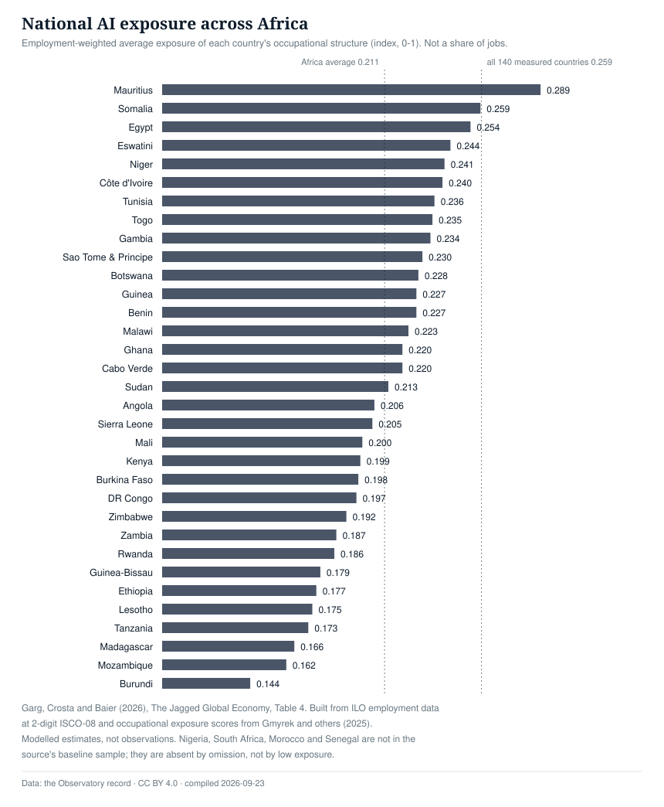

How exposed Africa’s labour markets are to AI, country by country, from the one source that scores African countries on a single basis. Exposure is not displacement: an exposed job can grow, and an unexposed one can vanish.
33 African countries on one exposure basis; employment rows still pending extraction.One measure, one basis, one source. Every country below is scored the same way, so the ranking is real even though the level is an estimate.
Employment-weighted average exposure of each country's occupational structure, on the index the source publishes (0-1). Not a share of jobs, and not a count of jobs lost.

Garg, Crosta and Baier (2026), The Jagged Global Economy, Table 4. The authors' definition, quoted: “the employment-share-weighted average exposure of a country's occupational structure”, built from ILO employment data at 2-digit ISCO-08 and occupational exposure scores from Gmyrek and others (2025). Status: <span class="chip chip--modelled"><span class="chip__mark" aria-hidden="true"></span>modelled estimate</span> <span class="chip chip--modelled"><span class="chip__mark" aria-hidden="true"></span>academic source</span>
| Country | Exposure index (0-1) |
|---|---|
| Mauritius | 0.289 |
| Somalia | 0.259 |
| Egypt | 0.254 |
| Eswatini | 0.244 |
| Niger | 0.241 |
| Côte d'Ivoire | 0.240 |
| Tunisia | 0.236 |
| Togo | 0.235 |
| Gambia | 0.234 |
| Sao Tome and Principe | 0.230 |
| Botswana | 0.228 |
| Guinea | 0.227 |
| Benin | 0.227 |
| Malawi | 0.223 |
| Ghana | 0.220 |
| Cabo Verde | 0.220 |
| Sudan | 0.213 |
| Angola | 0.206 |
| Sierra Leone | 0.205 |
| Mali | 0.200 |
| Kenya | 0.199 |
| Burkina Faso | 0.198 |
| Congo, Democratic Republic of the | 0.197 |
| Zimbabwe | 0.192 |
Showing 24 of 33 rows. The full series is in the downloadable CSV.
A country's score is the average exposure of its jobs, weighted by how many people do each kind of work. It sits on the same 0–1 scale as the occupational exposure scores underneath it. So Mauritius at 0.289 does not mean 29% of Mauritian jobs are exposed: it means Mauritian work is, on average, more exposed than Burundian work at 0.144. Read the ordering, not the level.
The homepage carries the IMF's finding that about four-fifths of jobs in sub-Saharan Africa have limited exposure to AI, which implies roughly one job in five sits in an exposed occupation. That is a share. This chart is an index. Both are published here, and they are never mixed on one axis, because a share and an average are not the same quantity.
Nobody observes a country's exposure directly. These are computed by the source's authors from published ILO employment data and published occupational scores, which is why they carry a status of their own: modelled, meaning computed from published inputs, neither observed nor a projection. The evidence is a research paper, which is also its own category in this record.
Every African country in the source's panel, highest exposure first. Showing 33 of 33 rows; the full register, including the source panel of 140 countries, is in the downloadable files.
| Country | Exposure index (0–1) | In our dataset |
|---|---|---|
| Mauritius | 0.289 | |
| Somalia | 0.259 | |
| Egypt | 0.254 | in our dataset |
| Eswatini | 0.244 | |
| Niger | 0.241 | |
| Côte d'Ivoire | 0.240 | in our dataset |
| Tunisia | 0.236 | |
| Togo | 0.235 | |
| Gambia | 0.234 | |
| Sao Tome and Principe | 0.230 | |
| Botswana | 0.228 | |
| Guinea | 0.227 | |
| Benin | 0.227 | |
| Malawi | 0.223 | |
| Ghana | 0.220 | in our dataset |
| Cabo Verde | 0.220 | |
| Sudan | 0.213 | |
| Angola | 0.206 | |
| Sierra Leone | 0.205 | |
| Mali | 0.200 | |
| Kenya | 0.199 | in our dataset |
| Burkina Faso | 0.198 | |
| Congo, Democratic Republic of the | 0.197 | |
| Zimbabwe | 0.192 | |
| Zambia | 0.187 | |
| Rwanda | 0.186 | in our dataset |
| Guinea-Bissau | 0.179 | |
| Ethiopia | 0.177 | in our dataset |
| Lesotho | 0.175 | |
| Tanzania, United Republic of | 0.173 | |
| Madagascar | 0.166 | |
| Mozambique | 0.162 | |
| Burundi | 0.144 |
Every jobs signal recorded, newest first. Headlines link to the original source.
Morocco, Nigeria, Senegal, South Africa do not appear in the source's baseline sample, which includes 140 countries and excludes 26 more for employment-data quality. They are missing by omission, not because their exposure is low, and this record does not estimate a figure to fill the hole.
Exposure is now measured; employment is not. There are still no rows carrying country, employer, headcount and wage from reported events, so the Jobs pillar cannot yet say how many jobs were created or lost, or what they paid. Publishing those fields before the extraction exists would mean estimating numbers we cannot source.
Exposure is not displacement. A job can be highly exposed and grow, or barely exposed and vanish. This layer says which labour markets sit closest to the technology, not what has happened to them.
{kind=link}
{kind=link}